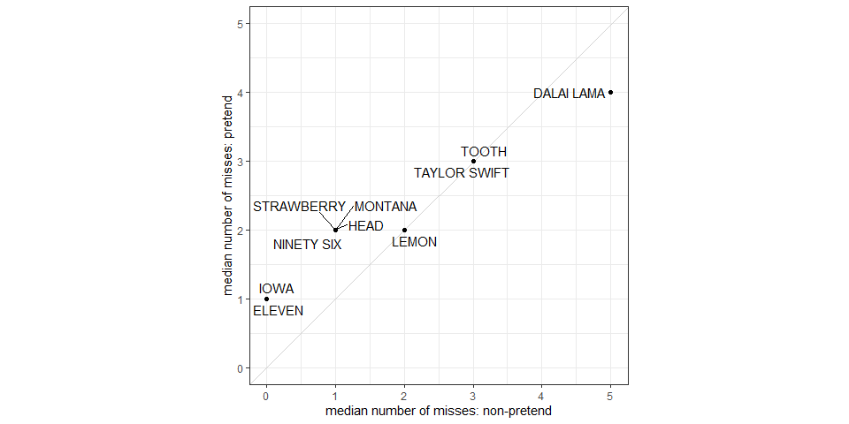
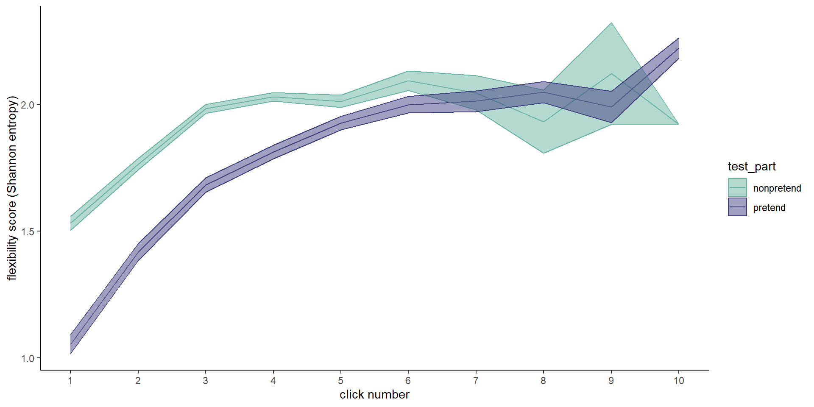
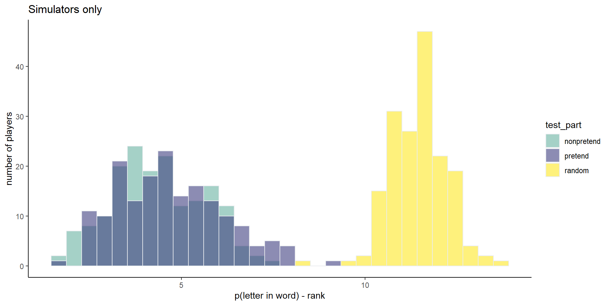
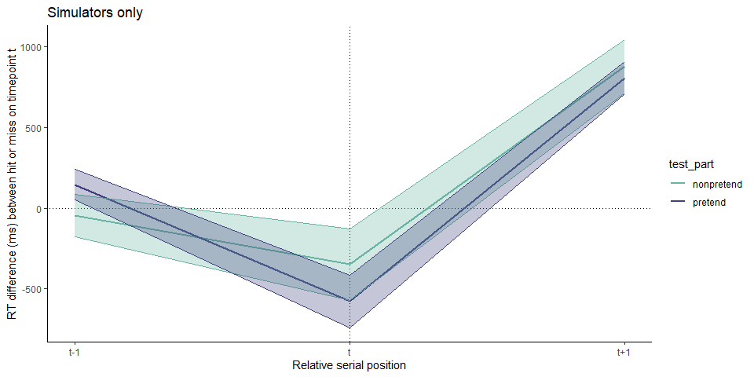

2 Exp. 2: Hangman; Exploratory results
2.1 Correlation in number of misses
Some words were more difficult to reveal. This required in players making more unsuccessful letter guesses in attempting to reveal some words compared to others. When pretending, players made more unsuccessful letter guesses for the exact same words \(r_{\mathrm{s}} = .97\), \(S = 5.48\), \(p < .001\).

2.2 Within-participant sequential guess entropy

Like for Battleship, flexibility scores increased as a function of click number for both pretend and non-pretend games, as expected if players adjust their behavior based on the outcomes of previous clicks. This process reached a plateau of around \(H=2\) and click number 6.
Importantly, before that point, flexibility was persistently lower in pretend games (click #1: \(t(500) = -12.67\), \(p < .001\); click #2: \(t(500) = -10.17\), \(p < .001\); click #3: \(t(500) = -10.39\), \(p < .001\); click #4: \(t(469) = -8.30\), \(p < .001\); click #5: \(t(99) = -1.61\), \(p = .110\)).
We reasoned that this tendency to rigidly follow a pre-defined plan may underlie at least some of the difference in game optimality between pretend and non-pretend games. We find evidence for such a correlation (\(r = -.13\), 95% CI \([-.21, -.04]\), \(t(499) = -2.91\), \(p = .004\)). Note that the direction is negative because high optimality is mapped to low values, but high flexibility is mapped to high values.
2.3 Model-based analysis
We considered three factors that contribute to letter selections in Hangman:
- The prior probability of a letter in the English language \(p(X)\).
- The posterior probability that a letter is present in the target word, given the game state \(S\) and the category \(p(X|S)\).
- The expected information gain this letter provides regarding the identity of the target word \(H(S)-\sum p(x_v)H(S,x_v)\) (where \(x_v\) is one potential outcome of guessing the letter \(X\), for example, finding it in the second and fifth positions).
To quantify the contribution of each of these factors to letter selection, we fitted a multinomial logistic regression model to the data of each player. The model was specified and fit using the Turing Julia library for Bayesian inference with probabilistic programming (Ge, Xu, and Ghahramani 2018). We compared the ensuing coefficients in ‘pretend’ and ‘non-pretend’ conditions.

All three terms had a positive effect in both conditions. Prior probability (base rate) had a stronger effect in pretend games (\(M = 0.24\), 95% CI \([0.20, 0.27]\), \(t(500) = 12.34\), \(p < .001\)). Hit posterior probability showed no such difference, and had a similar effect on players’ decisions in both conditions (\(M = 0.01\), 95% CI \([-0.09, 0.10]\), \(t(500) = 0.13\), \(p = .900\)). Finally, expected information gain had a weaker effect in pretend games (\(M = -0.29\), 95% CI \([-0.36, -0.21]\), \(t(500) = -7.62\), \(p < .001\)).
Given collinearity between model predictors, we suspected that the effects of expected information gain may be driven by posterior probability effects. To isolate unique contributions of prior probability and expected information gain, we repeated the same analysis, but this time serially orthogonalizing the features (in the order [posterior, prior, expected information gain], and using the Gram Schmidt algorithm) prior to fitting the multinomial regression model. This time, expected information gain had no significant effect on decisions in non-pretend (\(t(500) = -0.32\), \(p = .750\)) and pretend games (\(t(500) = 1.29\), \(p = .199\)), rendering it possible that the previously observed effects were confounded with prior and posterior probability. In contrast, both prior and posterior probability had a significant positive effect, with prior probability having a stronger effect in pretend games (\(M = 0.26\), 95% CI \([0.18, 0.34]\), \(t(500) = 6.18\), \(p < .001\)).

2.4 Suppression or simulation?
At the end of the experiment, players were asked whether they had a strategy for pretending or for detecting pretense. I (MM) manually labeled their responses according to three criteria: mentions of suppression (e.g., “I just tried to forget what the word was”), simulation (e.g., ” I tried to focus on how I would have deduced the word if I hadn’t known it”), and rules (e.g., “I started with vowels in the order we receive them in school”). Some answers got more than one label and some got none. Overall, 10 mentioned using suppression, 181 mentioned using simulation, and 328 mentioned following a heuristic.
Since there were only 5 players who reported using suppression but not simulation, we focus our analysis only on the 176 who reported using simulation but no suppression.
2.4.1 Click optimality

Among simulators, pretend games were significantly more optimal than random (\(M = -6.73\), 95% CI \([-7.01, -6.45]\), \(t(171) = -47.72\), \(p < .001\)) even when restricting the analysis to letter selections that resulted in a miss (\(M = -2.41\), 95% CI \([-2.76, -2.06]\), \(t(168) = -13.66\), \(p < .001\)). Like in the full sample, simulators were more optimal when playing normally than when pretending (\(M = 0.35\), 95% CI \([0.11, 0.59]\), \(t(171) = 2.85\), \(p = .005\)), also when focusing on misses (\(M = 0.91\), 95% CI \([0.47, 1.36]\), \(t(168) = 4.07\), \(p < .001\)).
2.4.2 RT by outcome

The simulators group showed a similar temporal profile to that of the entire sample. Specifically, in pretend games, cell selections that resulted in a hit were faster than those that resulted in a miss (\(M = -1,268.01\), 95% CI \([-1,720.81, -815.20]\), \(t(167) = -5.53\), \(p < .001\)), and cell selections that followed a hit were slower than those that followed a miss (\(M = 1,037.25\), 95% CI \([673.65, 1,400.84]\), \(t(168) = 5.63\), \(p < .001\)).